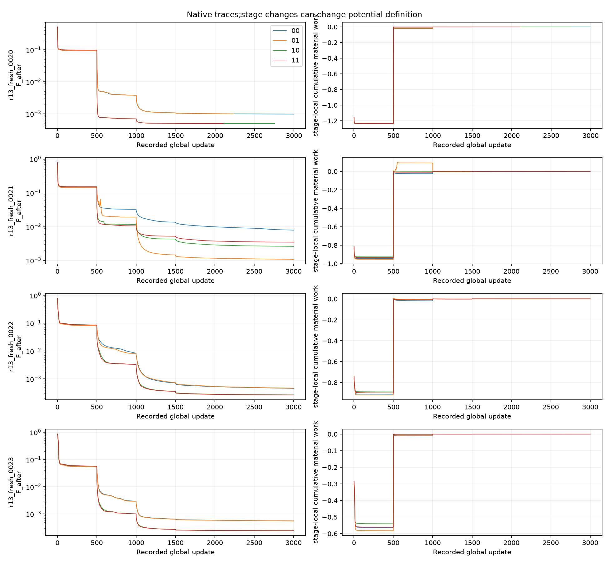
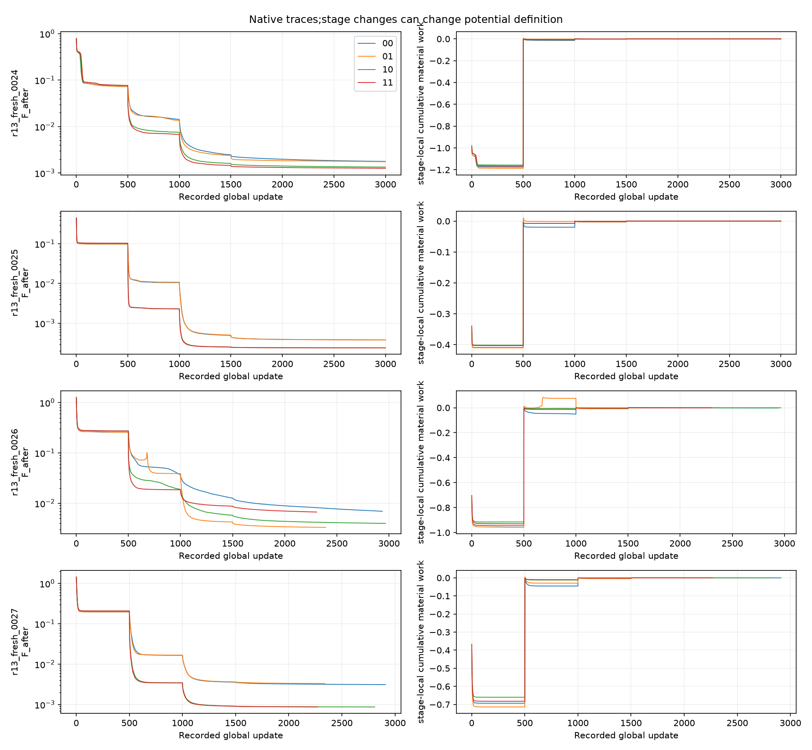
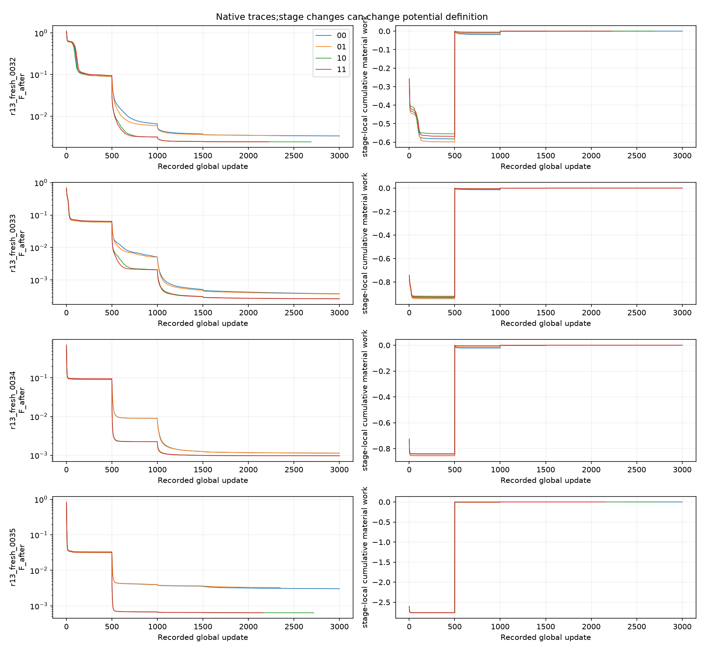
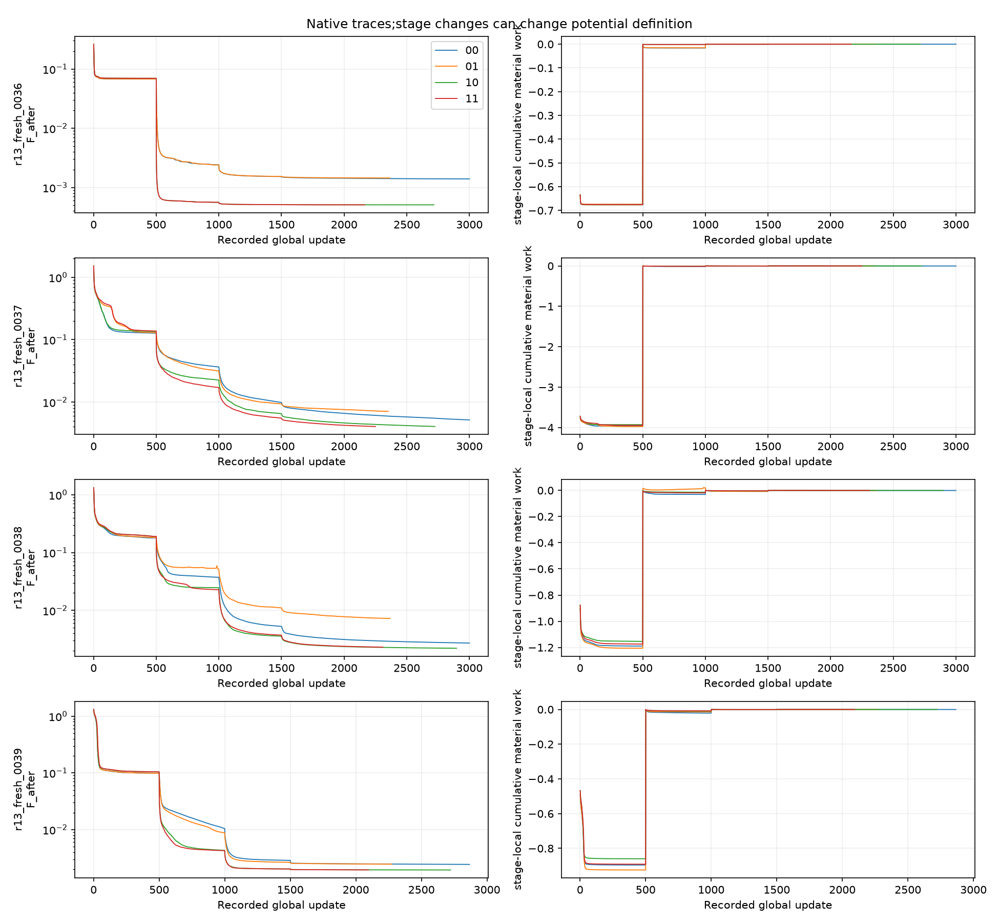
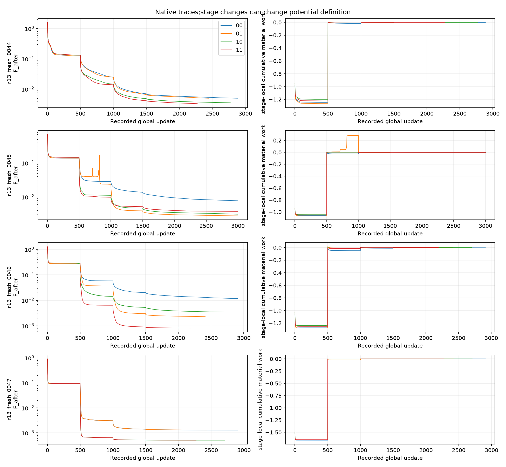
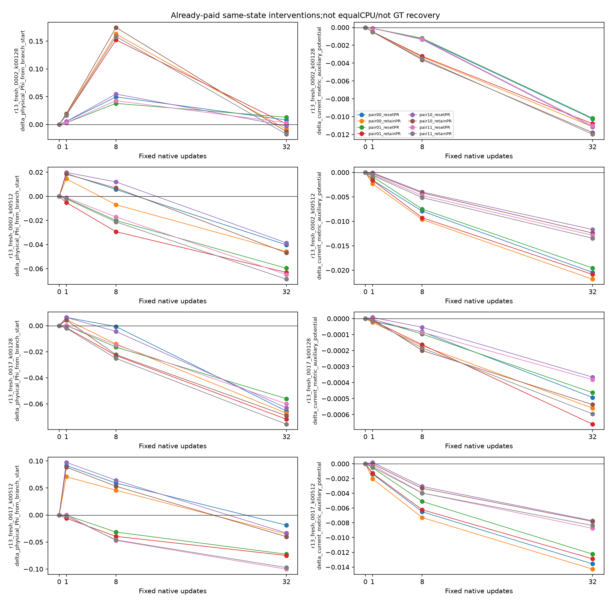
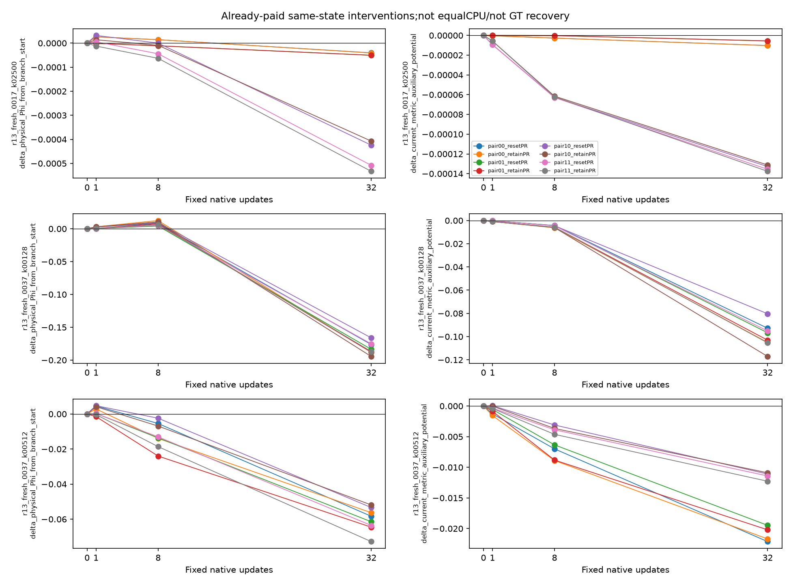
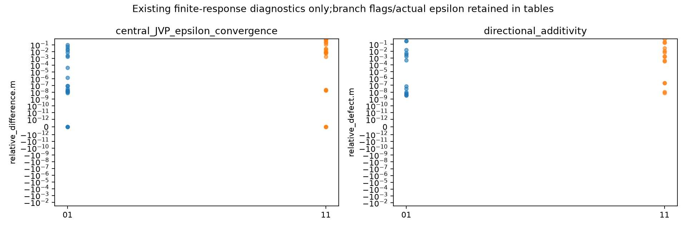

No-GT mechanical dynamics
No new physics or material scoring. Same-stage potential changes, finite recorded response diagnostics and all prior costs remain separate. Parent scientific review required.
Mechanical notes
NATIVE_STEPS CSV · JSON
TRAJECTORIES CSV · JSON
NATIVE_STAGE_SUMMARY CSV · JSON
SOURCE_CONFIGURATIONS CSV · JSON
ACTUAL_COST_COUNTERS CSV · JSON
CHECKPOINT_INVENTORY CSV · JSON
INTERVENTION_BRANCHES CSV · JSON
INTERVENTION_SNAPSHOTS CSV · JSON
INTERVENTION_NATIVE_STEPS CSV · JSON
FINITE_JVP_RESPONSES CSV · JSON
FINITE_JVP_COMPARISONS CSV · JSON
INTERVENTION_COST_EVENTS CSV · JSON
INTERVENTION_RECEIPTS CSV · JSON
INTERVENTION_CONFIGURATIONS CSV · JSON
REPEATED_STEP_CONTROLS CSV · JSON
INTERVENTION_FAILURES CSV · JSON
PERTURBATION_SCOPE CSV · JSON
INTERVENTION_BATCH CSV · JSON











